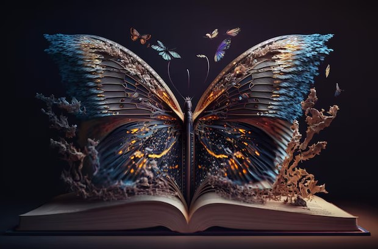

Los libros de fantasía nos transportan a mundos llenos de magia, criaturas extraordinarias y aventuras épicas. Obras como "El Señor de los Anillos" de J.R.R. Tolkien han cautivado a generaciones, ofreciendo una mezcla perfecta de mitología y narración envolvente. La fantasía permite explorar lo imposible y despertar la imaginación como ningún otro género. Es un escape a realidades donde las reglas de la naturaleza son maleables, y lo sobrenatural se entrelaza con lo cotidiano.
¿Qué son los libros de fantasía? La fantasía es un género literario que se caracteriza por la creación de mundos ficticios con elementos sobrenaturales o mágicos. A diferencia de la ciencia ficción, que se basa en teorías científicas o futuristas, la fantasía se fundamenta en lo irreal y lo mítico. Este género permite la introducción de personajes como magos, dragones, elfos y otros seres fantásticos, y explora temas profundos como la lucha entre el bien y el mal, el destino, y la búsqueda del héroe. Muchas veces, la fantasía sirve como metáfora para abordar cuestiones humanas universales.
Algunos de los subgéneros más populares incluyen la fantasía épica, como en "Canción de Hielo y Fuego" de George R.R. Martin, donde las luchas por el poder y el destino de reinos enteros toman el centro del escenario. También está la fantasía urbana, donde los elementos mágicos se insertan en entornos contemporáneos, como en la saga de "Harry Potter" de J.K. Rowling. Cada subgénero ofrece una manera diferente de experimentar la fantasía, ya sea a través de relatos épicos, historias de personajes complejos, o reflexiones sobre la magia en nuestra vida cotidiana.
